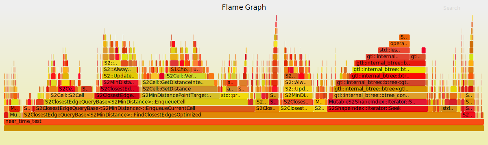

1. 使用 Perf 分析指定函数的性能并可视化
1.1. 使用的两个脚本
1.1.1. sperf
#!/bin/bash
if [[ $# -eq 0 ]]; then
echo " Usage: sperf <commands> ..."
exit 0
fi
perf record -q --call-graph lbr --switch-output -- "$@"
1.1.2. perfsvg
#!/bin/bash
if [[ $# -eq 0 ]]; then
echo " Usage: perfsvg <filename> ..."
exit 0
fi
# get scripts
ghroot="https://raw.githubusercontent.com/brendangregg/FlameGraph/master"
bindir="${HOME}/program/usr/bin"
st1="${bindir}/stackcollapse-perf.pl"
st2="${bindir}/flamegraph.pl"
if [[ ! -f "${st1}" ]]; then
mkdir -p ~/program/usr/bin
wget "${ghroot}/stackcollapse-perf.pl" -O "${st1}"
fi
if [[ ! -f "${st2}" ]]; then
mkdir -p ~/program/usr/bin
wget "${ghroot}/flamegraph.pl" -O "${st2}"
fi
rid=$(timestamp)
pref="/tmp/.fperf-${rid}"
perf script -i "${1}" > ${pref}.perf
perl -w "${st1}" ${pref}.perf > ${pref}.folded
perl -w "${st2}" ${pref}.folded > fperf-${rid}.svg
rm -f ${pref}.perf ${pref}.folded
echo "fperf-${rid}.svg
1.2. 在函数内设置性能分析锚点
static pid_t __perf_pid = 0;
void
debug_perf_ppid(void)
{
const pid_t ppid = getppid();
char tmp[1024];
sprintf(tmp, "/proc/%d/cmdline", ppid);
FILE * const fc = fopen(tmp, "r");
const size_t nr = fread(tmp, 1, 1020, fc);
fclose(fc);
// look for "perf record"
if (nr < 11) return;
tmp[nr] = '\0';
for (int i = 0; i < nr; i++) {
if (tmp[i] == 0) tmp[i] = ' ';
}
char * const perf = strstr(tmp, "perf record");
if (perf == NULL) return;
// it should be
__perf_pid = ppid;
}
void
debug_perf_switch(void)
{
if (__perf_pid > 0) kill(__perf_pid, SIGUSR2);
}
void
debug_perf_stop(void)
{
if (__perf_pid > 0) kill(__perf_pid, SIGINT);
}
1.3. 性能分析
#include "road_hc_util.h"
#include "road_sample.h"
#include <fstream>
#include <sys/types.h>
#include <unistd.h>
#include <signal.h>
using namespace rasi;
MutableS2ShapeIndex road_index;
const double kRepeat = 500000;
static pid_t __perf_pid = 0;
void
debug_perf_ppid(void)
{
const pid_t ppid = getppid();
char tmp[1024];
sprintf(tmp, "/proc/%d/cmdline", ppid);
FILE * const fc = fopen(tmp, "r");
const size_t nr = fread(tmp, 1, 1020, fc);
fclose(fc);
// look for "perf record"
if (nr < 11) return;
tmp[nr] = '\0';
for (int i = 0; i < nr; i++) {
if (tmp[i] == 0) tmp[i] = ' ';
}
char * const perf = strstr(tmp, "perf record");
if (perf == NULL) return;
// it should be
__perf_pid = ppid;
}
void
debug_perf_switch(void)
{
if (__perf_pid > 0) kill(__perf_pid, SIGUSR2);
}
void
debug_perf_stop(void)
{
if (__perf_pid > 0) kill(__perf_pid, SIGINT);
}
vector<pair<double,double>> initial() {
// std::ifstream file("../GPS_2016_11_01");
// CSVRow row;
LoadRoadIndex(road_index, "../shenzhen_split_edges.json");
vector<pair<double,double>> samples(2);
for(auto& s : samples) {
s = pair<double,double>{23.028605, 114.8476};
}
return samples;
}
void near(vector<pair<double,double>>& samples){
S2ClosestEdgeQuery::Options options;
options.set_max_edges(1);
S2ClosestEdgeQuery query(&road_index,options);
S2ClosestEdgeQuery::PointTarget target_edge(S2Point(S2LatLng::FromDegrees(samples[0].first, samples[0].second)));
auto started = std::chrono::high_resolution_clock::now();
debug_perf_switch();
for (int i = 0; i < kRepeat; i++) {
auto result_edge = query.FindClosestEdges(&target_edge);
}
auto done = std::chrono::high_resolution_clock::now();
std::cout << "Everage near time per point(ms): "<< std::chrono::duration_cast<std::chrono::microseconds>(done-started).count()/kRepeat << "us" << "\n";
debug_perf_stop();
}
static double ans = 0;
int main(void) {
debug_perf_ppid();
vector<pair<double,double>> samples = initial();
near(samples);
std::cout << "In the end." << std::endl;
for(int i = 0; i < 500000; i++) {
ans = pow(i,2);
}
return 0;
}
1.4. 生成可视图
对生成的 perf.data 文件，使用命令：
perfsvg perf.data.2018071020563854
